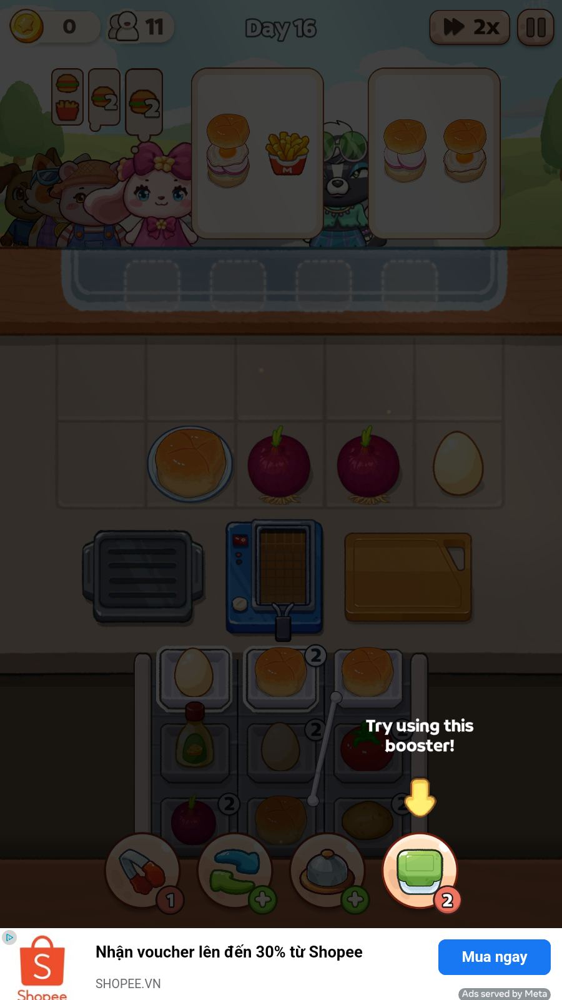
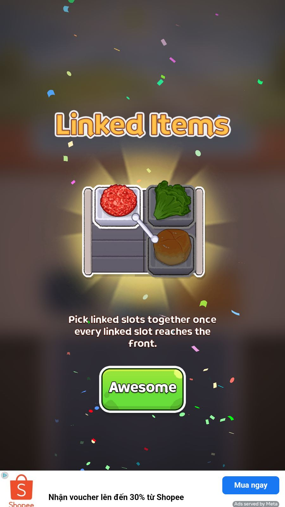

Hướng dẫn trong màn
Mô tả
- Game có ba lớp tutorial: (1) tutorial chạm tay trong level do
TutorialManagerchạy từ cácTutorialSequenceSO(level 1, level 4, lần đầu gặp shipper, boss, lần đầu dùng Tongs); (2) tutorial UI củaInGameUITutorialControl(mở khoá booster, combo Flavor Burst); (3) tutorial Home (nâng cấp nhà hàng, nâng cấp dụng cụ). - Mỗi bước là một
TutorialStep(Talk / Tap / Wait / CallCustomer): màn tối có lỗ sáng, bàn tay chỉ, vàTutorialGatechỉ cho chạm đúng chỗ. - Trạng thái "đã xem" lưu ở PlayerPrefs (
TutFirstLv,TutShipper,TutBoss,TutPickUp,Tut_<loại>_<n>_Done,TutUpgrRes_Done,TutUpgrTool_Done). - Popup giới thiệu cơ chế mới (
UIPopupIntroNewMechanics) thuộc cùng hệ thống nhưng trang cơ chế do tính năng khác viết; ở đây chỉ ghi lịch.
Thiết kế chi tiết
Tóm tắt thiết kế
- APK Tutorial level được thiết kế theo dữ liệu: mỗi level có
tutIdtronglv_metadata, mỗitutIdlà mộtTutorialSequenceSOgồm các bước Talk / Tap / Wait / CallCustomer. Burger cófirst(7 bước) ở level 1 vàsecond(2 bước) ở level 4. - Code Có bốn tutorial theo sự kiện (lần đầu mỗi loại): level đầu, shipper, boss, Tongs. Mỗi loại lưu một cờ PlayerPrefs; xong là không bao giờ chạy lại.
- Playtest Booster mới (Day 16) luôn đi theo bộ ba: popup New Booster tặng x2, màn tối + mũi tên, người chơi tự bấm. Tutorial không làm hộ mà ép người chơi tự thao tác.
- Playtest Cơ chế mới (Linked) được giới thiệu bằng popup trước level đầu tiên có nó: hiện sau khi thắng Day 13, mà Linked xuất hiện thật từ Day 14.
- Code Tutorial Home chỉ chạy ở map đầu (
highestMapPlayable == 0): nâng cấp nhà hàng trước, nâng cấp dụng cụ sau khi qua level 1. - Nhận định Tutorial chạm tay (5 sequence) chỉ có trong scene Burger; các map sau không có
TutorialManager, nên người chơi chỉ học bằng popup cơ chế và tutorial UI.
Luồng người chơi từng bước
- Level 1: gặp khách, chạm 3 nguyên liệuNgười chơi APKTalk chào mừng, gọi khách, Talk chỉ khách, rồi Tap bun, patty, lettuce, Wait đơn xong.Người chơi 16/11 bắt đầu ở Day 13 nên không thấy (Playtest không có ảnh).
- Level 4: chạm phiếu đơnNgười chơi APKCallCustomer rồi Tap phiếu đơn: "Tap a customer's order to change the display".
- Booster mở khoá: popup quàGiao diện Playtest"New Booster" Stack Box x2, nút Claim.

Day 16: popup "New Booster" Stack Box x2 và nút Claim, trước tutorial - Booster mở khoá: ép dùng thửNgười chơi PlaytestMàn tối, chỉ nút Stack Box sáng, mũi tên vàng, "Try using this booster!".

Day 16: tutorial booster, màn tối, mũi tên vàng "Try using this booster!" chỉ Stack Box x2 - Cơ chế mới: popup giới thiệuGiao diện PlaytestSau khi thắng Day 13: "Linked Items" kèm hình và nút "Awesome".

Sau khi thắng Day 13: popup "Linked Items" giới thiệu cơ chế mới, nút "Awesome" - Khách đặc biệt lần đầuHệ thống Code
OnOrderShownthấy shipper / boss lần đầu thì chạy sequence 1 bước Talk với lỗ sáng quanh khách.


Lịch tutorial theo Day (burger, 100% đọc từ asset + RC)
| Day | Tutorial | Cơ chế chạy | Nguồn |
|---|---|---|---|
| 1 | first: 7 bước (khách, bun, patty, lettuce) | TutorialManager (level) | lv_metadata burger L1 first |
| 2 (sau level 1) | Home: nâng cấp nhà hàng (3 bước) | HomeUITutorialControl | IsTutProgressEligible |
| 2-3 | Home: nâng cấp dụng cụ (5 bước) | HomeUITutorialControl | highestLevelPlayable + 1 > 1 |
| 3 | Mở Tongs (suy luận: cùng luồng quà + "Try using this booster!"); lần đầu hạ camera có tutorial pickup | InGameUITutorialControl + TutorialManager | lvUnlock 3, pickUpTutId |
| 4 | second: chạm phiếu đơn (2 bước) | TutorialManager (level) | lv_metadata burger L4 second |
| 9 | Mở Swap Row | InGameUITutorialControl | lvUnlock 9 |
| 12 | Mở Auto Cook | InGameUITutorialControl | lvUnlock 12 |
| 16 | Mở Stack Box (Playtest: popup x2 + mũi tên) | InGameUITutorialControl | lvUnlock 16; Playtest |
| lần đầu có shipper / boss | shipper, boss (1 bước Talk) | TutorialManager (sự kiện) | OnOrderShown |
| trước level có cơ chế mới | Popup giới thiệu cơ chế | UIPopupIntroNewMechanics | Playtest Day 13 (Linked) |
Tutorial mở khoá Day 3 / 9 / 12 chưa thấy khi chơi (Playtest bắt đầu Day 13), suy luận từ luồng chung. Ngày của tutorial Home là suy luận từ IsTutProgressEligible (map đầu, level ≥ 2). Day 1 và 4 lấy từ tutId trong dữ liệu level.
Level đầu tiên có cơ chế được giới thiệu (APK, theo map)
| Cơ chế | burger | coffee | sushi | pasta | icecream | sandwich | tteokbokki | seafood | dimsum | pizza | bento |
|---|---|---|---|---|---|---|---|---|---|---|---|
| Ô ẩn (Hidden) | L8 | L5 | L3 | L3 | L4 | L7 | L4 | L4 | L7 | L2 | L7 |
| Linked | L14 | L3 | L4 | L4 | L7 | L1 | L4 | L4 | L8 | L4 | L6 |
| OrderLock (khối băng theo đơn) | L26 | L17 | L5 | L10 | L4 | L4 | L4 | L10 | L10 | L4 | L4 |
| Freeze (ô đóng băng) | L34 | L23 | L8 | L17 | L4 | L4 | L5 | L2 | L4 | L3 | L8 |
| Combined | L34 | L8 | L10 | L4 | L10 | L7 | L7 | L9 | L9 | L13 | L13 |
| ColorLock | L41 | L13 | L10 | L4 | L11 | L12 | L14 | L7 | L5 | L7 | L10 |
Nguồn: Docs/LEVEL_DATA.md (bảng APK). Level thật có popup giới thiệu = level đầu có cơ chế (hoặc level ngay trước, theo Playtest).
Các bước TutorialStep
| Loại bước | Trường chính | Dùng ở |
|---|---|---|
| TutorialStepTalk | lines / lineKeys, style, idleHandDelay=5, focus | first (2 lượt), shipper, boss |
| TutorialStepCallCustomer | waitTimeout=5 giây | first, second |
| TutorialStepTap | target (kind, id), showHand, talkLine, talkStyle | first (3 lần), second, pickup |
| TutorialStepWait | mode (1 = chờ đơn xong), seconds | first |
Mọi bước có focus: enabled, size (2-4), offset, shrinkDuration=0,35, follow=1.
Vận dụng cho game khác
- Gắn tutorial vào dữ liệu level (một
tutId) thay vì code từng level; thêm level dạy học mới chỉ là thêm một asset. - Tutorial theo sự kiện "lần đầu gặp" (khách đặc biệt, công cụ mới) và lưu cờ một lần: dạy đúng lúc cần, không dạy dồn lúc đầu.
- Với đồ mới, đi theo nhịp: tặng quà, làm tối màn hình, ép người chơi tự bấm; người chơi nhớ vì tự làm, không vì đọc.
Bảng tổng hợp mọi tính năng đã làm chi tiết: FoodiePop_ThietKeChiTiet.xlsx.
Mở khóa & điểm vào
lv_metadata.tutId của level quyết định tutorial level (burger: first ở level 1, second ở level 4; các map khác để trống). TutorialManager.HasLevelTutorial đòi Enabled = true, tutId khác rỗng và chuỗi bước có ít nhất 1 bước. Tutorial khách / Tongs chỉ chạy một lần mỗi loại (CakeOrderTutorialStateControl.IsShownTut).
Điểm vào:
- Level 1 và level 4 của Burger Stall (
tutIdtrongmap_config_burger_lv_metadata) - Lần đầu một đơn của shipper hoặc boss hiện ra (
OrderShownEvent) - Lần đầu camera hạ xuống khi dùng Tongs (
PickAnyReadyEvent) - Popup "New Booster" tới Day mở khoá (3 / 9 / 12 / 16)
- Home sau khi thắng level đầu: tutorial nâng cấp nhà hàng và dụng cụ
Cách hoạt động
- Level nạp xong:
LevelBaseCakeOrderAbstract.StartTutorial(tutId)đặtPlayState = Tutorial_LevelBase,MessyController.OnStartTutorialgọiTutorialManager.TryPlayLevelTutorial(tutId, onDone). FindSequence(tutId)tìmTutorialSequenceSOtrong mảngsequences; không có thì bỏ qua.Play(sequence, onDone, pause):Beginhiện view, dừng thời gian (StopTime) hoặc giữ timer khách (HoldTimers) tuỳTutorialPause.- Từng
TutorialStep.Run(context): Talk hiện lời thoại, CallCustomer gọi khách ra, Tap chờ người chơi chạm đúng mục tiêu (WaitForTap,TutorialGate.AllowOnly), Wait chờ đơn xong. ApplyStepvẽ khung tối + lỗ sáng (TutorialFocusCanvasView), bàn tay (TutorialHandleTap), lời thoại (TutorialTalkView).Endnhả khoá (TutorialGate.Free), nhả timer, ẩn view, gọionDone.- Tutorial theo sự kiện:
OnOrderShownvàOnPickAnyReadygọiTryPlayEventTutkiểmIsShownTut; xongSetDoneTutghi PlayerPrefs. - Tutorial UI (booster, combo) chạy qua
UIInLevelCakeOrder.ShowTutorial→InGameUITutorialControl.SetData; tutorial Home chạy quaHomeControllerCookOrder.CheckShowTut.
Ảnh chụp
Bấm ảnh để phóng to, dùng phím ← → để chuyển ảnh. Nhãn màu cho biết nguồn bằng chứng của ảnh.
Phần thưởng
| Ngữ cảnh | Phần thưởng | Evidence |
|---|---|---|
| Tutorial mở khoá booster | Hộp quà x2 booster (Playtest Day 16 Stack Box x2) | InGameUITutorialProcessBooster.IEShowStepOpenBox |
Tutorial first / second / shipper / boss | Không có thưởng riêng (chỉ hướng dẫn) | TutorialManager.Play |
Số liệu chính
| Chỉ số | Giá trị | Nguồn |
|---|---|---|
| Số TutorialSequenceSO | 5 | MonoBehaviour/TutorialSequence-*.asset |
| Số bước tutorial level 1 | 7 | TutorialSequence-first |
| Tutorial booster mở khoá | 4 (Day 3 / 9 / 12 / 16) | booster_config |
| Tutorial Home | 2 (nhà hàng 3 bước, dụng cụ 5 bước) | HomeUITutorialProcessUpgrade* |
| Popup giới thiệu cơ chế | 6 loại (Freeze, Hidden, OrderLock, ColorLock, Linked, Combined) | GameplayHUD.unity |
| Key PlayerPrefs | 10 | CakeOrderTutorialStateControl, InGameUITutorialControl, HomeUITutorialControl |
Use case (15)
Bấm vào từng use case để mở. Mở/đóng tất cả
UC-01 Level 1: tutorial `first`
Các bước1. Talk (2 câu): "Congrats on your very own fast-food restaurant!" rồi "Let's open for business!".
2. CallCustomer (chờ tối đa 5 giây) gọi khách đầu.
3. Talk có lỗ sáng quanh khách: "She wants a juicy burger".
4. Tap burger_bun_raw ("Tap the ingredient you want to use"), rồi Tap beef_patty_raw, rồi Tap lettuce_raw.
5. Wait: chờ đơn đầu hoàn thành.
| Actor | Player |
|---|---|
| Trigger | Vào level 1 Burger Stall (tutId=first) |
| Điều kiện | TutorialManager.Enabled, chưa xong |
| Kết quả | Người chơi mới học chạm nguyên liệu và hoàn thành đơn đầu |
| Quy tắc / số liệu | 7 bước; lỗ sáng 2x2 cho Tap, 4x4 cho Talk; thời gian thu lỗ 0,35 giây; chỉ tay (showHand=1) |
| Evidence | TutorialManager.TryPlayLevelTutorial |
UC-02 Level 4: tutorial `second`
Các bước1. CallCustomer (chờ 5 giây).
2. Tap vào phiếu đơn của khách (CustomerOrder), lỗ sáng 3x3, lời thoại "Tap a customer's order to change the display".
| Actor | Player |
|---|---|
| Trigger | Vào level 4 Burger Stall (tutId=second) |
| Điều kiện | Chưa xong |
| Kết quả | Học cách chạm phiếu đơn để đổi cách hiển thị |
| Quy tắc / số liệu | 2 bước. Mốc level 4 trùng thời điểm Linked bắt đầu xuất hiện ở nhiều map (xem bảng) |
| Evidence | TutorialManager.Play |
UC-03 Lần đầu có khách shipper
Các bước1. OnOrderShown nhận diện khách (CustomerSpawnData.IsShipper).
2. TryPlayCustomerTut chạy sequence shipper.
3. Talk, lỗ sáng 4x4 quanh khách rat_shipper: "The delivery man picks up multiple orders before time runs out".
4. SetDoneTut(Shipper).
| Actor | System |
|---|---|
| Trigger | OrderShownEvent của khách IsShipper |
| Điều kiện | IsShownTut(Shipper) = false |
| Kết quả | Giải thích shipper gom nhiều đơn |
| Quy tắc / số liệu | PlayerPrefs TutShipper |
| Evidence | TutorialManager.OnOrderShown |
UC-04 Lần đầu có khách boss
Các bướcNhư UC-03 với sequence boss, lời thoại "Boss is demanding and easily lose patience"
| Actor | System |
|---|---|
| Trigger | OrderShownEvent của khách IsBoss |
| Điều kiện | IsShownTut(Boss) = false |
| Kết quả | Giải thích boss ít kiên nhẫn |
| Quy tắc / số liệu | PlayerPrefs TutBoss |
| Evidence | TutorialManager.TryPlayCustomerTut |
UC-05 Lần đầu dùng Tongs (pickup)
Các bước1. OnPickAnyReady tìm ô cần dùng (TutorialTargetResolver.FindBeltItemBehindFront, loại NeededIngredient).
2. Chạy sequence pickup: Tap vào ô cup, bàn tay chỉ.
3. Dùng TutorialPause.StopTime.
| Actor | System |
|---|---|
| Trigger | PickAnyReadyEvent (camera hạ để chọn) |
| Điều kiện | IsShownTut(PickUpBooster) = false |
| Kết quả | Dạy chọn một món sâu trong cột |
| Quy tắc / số liệu | PlayerPrefs TutPickUp |
| Evidence | TutorialManager.OnPickAnyReady |
UC-06 Mở khoá booster: hộp quà + "Try using this booster!"
Các bước1. UIInLevelCakeOrder.ShowTutorial mở InGameUITutorialControl kiểu Booster.
2. InGameUITutorialProcessBooster: hộp quà mở, booster bay vào nút, nút Unlock.
3. Màn tối, mũi tên vàng, "Try using this booster!", chờ người chơi bấm.
4. SetDoneTut(Booster, index).
| Actor | Player |
|---|---|
| Trigger | Tới Day lvUnlock (3 / 9 / 12 / 16) |
| Điều kiện | InGameUITutorialControl.IsDoneTut(Booster, index) = false |
| Kết quả | Booster mở khoá và được dùng thử 1 lần |
| Quy tắc / số liệu | Key Tut_Booster_<index>_Done (GetKeyIsDoneTut); Playtest Day 16 Stack Box |
| Evidence | InGameUITutorialControl.SetData |
UC-07 Tutorial Combo (Flavor Burst)
Các bước1. InGameUITutorialProcessCombo.IETutCombo.
2. Các thông điệp: "When cooking, there is a chance you enter a special state!", "Each customer you serve fills this bar! Serve {0} more customers!", "Each dish you serve fills this bar!...", "Great! In Flavor Burst, you cook super efficiently. Have fun!".
| Actor | Player |
|---|---|
| Trigger | Lần đầu combo xuất hiện trong level |
| Điều kiện | IsDoneTut(Combo, index) = false |
| Kết quả | Dạy thanh combo |
| Quy tắc / số liệu | Key Tut_Combo_<index>_Done; level bật combo chưa xác minh (xem gaps) |
| Evidence | InGameUITutorialProcessCombo.IETutCombo |
UC-08 Popup giới thiệu cơ chế mới
Các bước1. ShowTutorial xếp hàng đợi (_gridMechanicsToShowIntro, _slotMechanicsToShowIntro).
2. Lần lượt mở UIPopupIntroNewMechanics (Freeze, Hidden, OrderLock, ColorLock, rồi Linked, rồi Combined).
3. Bấm "Awesome" để đóng.
| Actor | System |
|---|---|
| Trigger | Level kế tiếp có cơ chế mới chưa xem |
| Điều kiện | Cơ chế nằm trong _introNewObstacleConfigs / _introNewGridConfigs / Linked / Combined |
| Kết quả | Biết cơ chế trước khi gặp |
| Quy tắc / số liệu | Playtest: sau khi thắng Day 13 hiện "Linked Items" (Pick linked slots together once every linked slot reaches the front); Linked đầu tiên xuất hiện ở burger Day 14 |
| Evidence | UIInLevelCakeOrder.ShowTutorial |
UC-09 Home: tutorial nâng cấp nhà hàng
Các bước1. CheckShowTut khoá tab và nhập liệu (SetTutTabLocked, SetTutLoadInputBlocked).
2. 3 bước: "Try upgrading your restaurant" (IEShowStep1), "Here are the items you can buy" (Step2), "Now let's start the day!" (Step3).
| Actor | Player |
|---|---|
| Trigger | Vào Home khi chưa xong UpgradeRestaurant |
| Điều kiện | highestMapPlayable == 0 (map đầu) (IsTutProgressEligible) |
| Kết quả | Người chơi tiêu coin lần đầu |
| Quy tắc / số liệu | Key TutUpgrRes_Done |
| Evidence | HomeControllerCookOrder.CheckShowTut |
UC-10 Home: tutorial nâng cấp dụng cụ
Các bước5 bước: "With the coins you earned yesterday, let's try upgrading something!" (Step1), "Now let's go to the upgrade tool tab!" (Step2), "Try upgrading this griddle!" (Step3), "Now that you've upgraded the toaster, let's return to start the day!" (Step4), "Now let's start the day!" (Step5)
| Actor | Player |
|---|---|
| Trigger | Vào Home sau khi xong tutorial nhà hàng |
| Điều kiện | highestMapPlayable == 0 và highestLevelPlayable + 1 > 1 |
| Kết quả | Học nâng cấp dụng cụ |
| Quy tắc / số liệu | Key TutUpgrTool_Done |
| Evidence | HomeControllerCookOrder.IsTutProgressEligible |
UC-11 Khoá thao tác: chỉ chạm đúng chỗ
Các bước1. TutorialGate.AllowOnly(target, neededItem).
2. CanTapIngredient(item) và CanTapOrder() chặn chạm sai; TutorialFocusCanvasView.HoleRaycastFilter chỉ cho chạm trong lỗ sáng.
| Actor | System |
|---|---|
| Trigger | Đang chạy bước Tap |
| Điều kiện | TutorialGate.IsActive |
| Kết quả | Không chạm nhầm được |
| Quy tắc / số liệu | TutBlockId = 1009 khoá thao tác khác |
| Evidence | TutorialGate.AllowOnly |
UC-12 Giữ thời gian khi tutorial chạy
Các bước1. TutorialPause None / HoldTimers (1) / StopTime (2).
2. HoldTimers: HoldCustomerTimers giữ timer khách; StopTime: TimeControlCakeOrder.StopTime.
3. End gọi ReleasePause.
| Actor | System |
|---|---|
| Trigger | Play bắt đầu |
| Điều kiện | - |
| Kết quả | Khách không hết kiên nhẫn trong lúc đọc |
| Quy tắc / số liệu | Tutorial level dùng mặc định None (khách chưa chạy); khách / pickup dùng StopTime |
| Evidence | TutorialManager.HoldCustomerTimers |
UC-13 Đánh dấu đã xem và reset bằng cheat
Các bướcCakeOrderTutorialCheat liệt kê các tutorial, nút "RESET ALL" / "MARK ALL" gọi SetDoneTut hoặc ResetTut rồi PlayerPrefs.Save
| Actor | Team member |
|---|---|
| Trigger | Menu cheat "BtnCheatTutorial" |
| Điều kiện | Bản debug |
| Kết quả | Test lại tutorial |
| Quy tắc / số liệu | PlayerPrefs TutFirstLv, TutShipper, TutBoss, TutPickUp |
| Evidence | CakeOrderTutorialStateControl.SetDoneTut |
UC-14 Anim mở khoá icon của tính năng
Các bướcR1UnlockTutorial.PlayStart rebind animator, tìm child Icon_Lock; PlayUnlock chạy anim mở khoá rồi EnsureUnlocked
| Actor | System |
|---|---|
| Trigger | Popup mở khoá DreamyPass / DreamyStreak / DreamyTower / Leaderboard |
| Điều kiện | - |
| Kết quả | Ổ khoá mở trước khi hiện nội dung |
| Quy tắc / số liệu | Hàm tĩnh của R1 plugin, không phải tutorial chạm tay |
| Evidence | R1UnlockTutorial.PlayUnlock |
UC-15 Chờ tutorial đầu trước khi hiện HUD
Các bướcIEWaitDoneFirstTut chờ tutorial UI đầu tiên xong rồi mới hiện HUD và thanh booster
| Actor | System |
|---|---|
| Trigger | UIInLevelCakeOrder.OnShow |
| Điều kiện | Level có tutorial đầu |
| Kết quả | HUD không che tutorial |
| Quy tắc / số liệu | - |
| Evidence | UIInLevelCakeOrder.OnShow |
Cấu hình (19)
Gộp mọi nguồn: const trong code, giá trị mặc định trong APK, storage key, AB test, cờ server.
| Nguồn | Key | Kiểu | Giá trị | Ý nghĩa | Nơi định nghĩa |
|---|---|---|---|---|---|
| asset | TutorialSequence-first | TutorialSequenceSO | tutId first; 7 bước: Talk, CallCustomer(5s), Talk(customer), Tap burger_bun_raw, Tap beef_patty_raw, Tap lettuce_raw, Wait(mode 1) | Level 1 burger | MonoBehaviour/TutorialSequence-first.asset |
| asset | TutorialSequence-second | TutorialSequenceSO | tutId second; 2 bước: CallCustomer(5s), Tap CustomerOrder | Level 4 burger | MonoBehaviour/TutorialSequence-second.asset |
| asset | TutorialSequence-shipper | TutorialSequenceSO | tutId shipper; 1 bước Talk, target rat_shipper | Lần đầu shipper | MonoBehaviour/TutorialSequence-shipper.asset |
| asset | TutorialSequence-boss | TutorialSequenceSO | tutId boss; 1 bước Talk | Lần đầu boss | MonoBehaviour/TutorialSequence-boss.asset |
| asset | TutorialSequence-pickup | TutorialSequenceSO | tutId pickup; 1 bước Tap, target NeededIngredient id cup | Lần đầu dùng Tongs | MonoBehaviour/TutorialSequence-pickup.asset |
| asset (FSBurger.unity) | TutorialManager.shipperTutId / bossTutId / pickUpTutId | string | shipper / boss / pickup | Id sequence cho 3 tutorial theo sự kiện | _Production/Map-burger/Scenes/FSBurger.unity |
| code const | TutorialTargetKind | enum | None 0, Ingredient 1, Station 2, Customer 3, CustomerOrder 4, Anchor 5, NeededIngredient 6 | Loại mục tiêu của bước | AnhPD.FoodOrder.TutorialTargetKind |
| code const | TutorialPause | enum | None 0, HoldTimers 1, StopTime 2 | Cách tạm dừng game | AnhPD.FoodOrder.TutorialPause |
| code const | CakeOrderTutorialStateControl.TutType | enum | FirstLevel 0, Shipper 1, Boss 2, PickUpBooster 3, None 4 | 4 tutorial theo sự kiện | CakeOrder.CakeOrderTutorialStateControl |
| code const | InGameUITutorialControl.TutorialType | enum | None 0, Combo 1, Booster 2 | Tutorial UI trong level | CakeOrder.UI.InGameUITutorialControl |
| code const | HomeUITutorialControl.TutorialType | enum | None 0, UpgradeRestaurant 1, UpgradeTool 2 | Tutorial Home | CakeOrder.UI.HomeUITutorialControl |
| code const | TutorialManager.TutBlockId | int | 1009 | Id khoá thao tác khi tutorial chạy | TutorialManager |
| code const | TutorialManager.Enabled | static bool | công tắc toàn cục | HasLevelTutorial trả false khi tắt | TutorialManager |
| storage key | PlayerPrefs TutFirstLv / TutShipper / TutBoss / TutPickUp | int | 0 hoặc 1 | Đã xem tutorial theo sự kiện | CakeOrderTutorialStateControl.GetKeyShownTut |
| storage key | PlayerPrefs Tut_<Combo|Booster>_<index>_Done | int | 0 hoặc 1 | Đã xem tutorial UI | InGameUITutorialControl.GetKeyIsDoneTut |
| storage key | PlayerPrefs TutUpgrRes_Done / TutUpgrTool_Done | int | 0 hoặc 1 | Đã xem tutorial Home | HomeUITutorialControl.GetKeyIsDoneTut |
| json default | map_config_burger_lv_metadata (tutId) | string | first ở level 1, second ở level 4; các level khác rỗng | Gắn tutorial vào level | Data/levels/burger/L001.json, L004.json |
| json default | progress_scenario.lvShowBooster | int | 3 | Thanh booster hiện từ level 3 | ProgressScenarioConfig |
| server info | Live 16/11 | - | tutId trong lv_metadata live giống APK (burger: first L1, second L4); không có key tutorial riêng | Server chỉ đổi dữ liệu level, tutorial chạy theo asset trong APK | Data/remote_config_live_20261116.json |
Backend / server
| Command | Chiều | Mục đích |
|---|---|---|
lv_metadata.tutId (Remote Config) | server→client | chọn level nào chạy tutorial; live 16/11 giống APK |
Giao diện (UI)
| Element | Class | Mục đích |
|---|---|---|
| Khung tối có lỗ sáng | AnhPD.FoodOrder.TutorialFocusCanvasView | làm tối màn hình, chỉ chừa vùng cần chạm (size, offset, shrinkDuration) |
| Lời thoại + nhân vật | AnhPD.FoodOrder.TutorialTalkView | bóng thoại với nhân vật (TutorialTalkCharacterSpine, Punch) |
| Bàn tay chỉ | AnhPD.FoodOrder.TutorialHandleTap | tay gợi ý, idleHandDelay = 5 giây |
| Popup tutorial UI trong level | CakeOrder.UI.InGameUITutorialControl | booster, combo |
| Popup tutorial Home | CakeOrder.UI.HomeUITutorialControl | nâng cấp nhà hàng / dụng cụ |
| Popup giới thiệu cơ chế | CakeOrder.InGame.UIPopupIntroNewMechanics | hình + chữ + nút "Awesome" |
Storage keys
PlayerPrefs: TutFirstLv, TutShipper, TutBoss, TutPickUp PlayerPrefs: Tut_Combo_<n>_Done, Tut_Booster_<n>_Done PlayerPrefs: TutUpgrRes_Done, TutUpgrTool_Done
Còn thiếu / chưa xác minh
- Playtest bắt đầu ở Day 13, nên không thấy tutorial level 1, level 4, shipper, boss, pickup và Home; nội dung lấy từ asset
TutorialSequence-*và pseudo-C. TutorialManagervà 5 sequence chỉ nằm trong sceneFSBurger.unity; không thấy trong các scene map khác. Suy luận: tutorial level chỉ chạy ở Burger Stall.- Level đầu tiên có khách shipper / boss (và bật combo) chưa xác định:
typeIdkhách trong dữ liệu đều là 0, shipper / boss được quyết định theo nhân vật (customerIndex). TutorialManager.Enabledmặc định bao nhiêu chưa đọc được (static constructor).- Điều kiện thật để mở popup cơ chế mới (đầu level hay cuối level trước) chưa đọc hết: Playtest thấy "Linked Items" sau khi thắng Day 13, trong khi code xếp hàng đợi trong
ShowTutorial. - Home: điều kiện đủ coin cho
IsCanTriggerTut(cầnMapUpgradeConfig) chưa đọc.
Tính năng liên quan
Booster trong màn Giới thiệu tính năng mới (New Feature x/N) Khách và phiếu gọi món Luồng màn: vào, thắng, thua Ô ẩn (Hidden Item, token #2) Món liên kết (Linked Items, nhóm `$` thứ hai) Khối băng theo đơn (Ice Block, Grid-OrderLock) Khoá màu và chìa (Lock & Key, Grid-ColorLock) Ô đóng băng (Frozen Item, token #1:n) Băng chuyền nguyên liệu (ConveyorGrid) Nâng cấp nhà hàng và dụng cụ
Nguồn đã đọc
_analysis/code/decompiled/Assembly-CSharp/AnhPD.FoodOrder.TutorialManager.c_analysis/code/decompiled/Assembly-CSharp/AnhPD.FoodOrder.TutorialContext.c_analysis/code/decompiled/CakeOrder/CakeOrder.CakeOrderTutorialStateControl.c_analysis/code/decompiled/CakeOrder/CakeOrder.UI.InGameUITutorialControl.c_analysis/code/decompiled/CakeOrder/CakeOrder.Home.HomeControllerCookOrder.c_analysis/code/decompiled/CakeOrder/CakeOrder.InGame.InGameUITutorialProcessBooster.c_analysis/code/decompiled/R1Plugins/_GAME.GameUI.R1UnlockTutorial.c_rip/ExportedProject/Assets/MonoBehaviour/TutorialSequence-first.asset_rip/ExportedProject/Assets/MonoBehaviour/TutorialSequence-second.asset_rip/ExportedProject/Assets/MonoBehaviour/TutorialSequence-pickup.asset_rip/ExportedProject/Assets/_Production/Map-common_assets/Scenes/GameplayHUD.unityDocs/LEVEL_DATA.mdData/text/en-GB.json_analysis/live/fp_20261116/RESULTS_LIVE.md